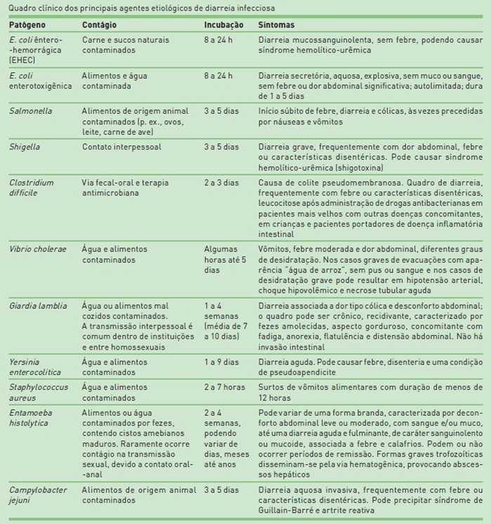

DIARREIA INFECCIOSA - DISENTERIA BACTERIANA
EPIDEMIOLOGIA
As diarreias infecciosas representam uma das cinco principais causas de morte no mundo, evidenciando maior impacto em crianças. Em países subdesenvolvidos, a incidência é de 2 a 3 vezes maior.
Os principais fatores de risco para a diarreia infecciosa são idade inferior a 5 anos (lactentes e pré-escolares), baixa condição socioeconômica e precariedade no saneamento básico. As crianças possuem as maiores taxas de morbimortalidade, apresentando cerca de 50 diarreias/ano, com 10% delas desenvolvendo quadros de desidratação significativa.
ETIOLOGIA
A maioria das diarreias de causa infecciosa é aguda, sendo autolimitada ou de fácil tratamento. Há poucas infecções que causam diarreia prolongada. Esta geralmente ocorre em pacientes imunocomprometidos. Em geral, os casos de diarreia infecciosa são virais (rotavírus). Já os agentes bacterianos mais prevalentes são Escherichia coli (principalmente a enterotoxigênica), Salmonella, Shigella e Staphylococcus aureus (intoxicação alimentar). Porém, considerando a população que apresenta diarreia grave e necessita de internação hospitalar, as bactérias enteroinvasivas destacam-se. A diarreia aguda com sangue (disenteria) é caracterizada pela presença de sangue nas fezes. Representa lesão na mucosa intestinal. Pode associar-se com infecção sistêmica e outras complicações, incluindo desidratação. Bactérias do gênero Shigella são as principais causadoras de disenteria.
PATOGÊNESE
A diarreia bacteriana aguda pode ser classificada, conforme a patogênese, em toxigênica (uma enterotoxina é a principal causa do mecanismo patogênico) e invasiva (o organismo penetra a superfície da mucosa como evento primário).
Diarreia toxigênica. Os principais organismos, nesse grupo, são o Vibrio cholerae e a E. coli enterotoxigênica (ETEC). Esses patógenos geram enterotoxinas do tipo citotóxico, causando diarreia com desidratação acentuada.
Fisiopatologia da diarreia por V. cholerae e ETEC
•O mecanismo básico da doença consiste em perda de líquido, relacionada à ação de uma enterotoxina nas células epiteliais do intestino delgado.
•O patógeno não invade a superfície mucosa. A arquitetura da mucosa permanece intacta, sem evidência de destruição celular.
• O conteúdo fecal é aquoso e frequentemente volumoso, tendo origem no intestino delgado, onde a enterotoxina apresenta maior atividade.
Diarreia invasiva. O principal mecanismo de ação consiste na invasão do epitélio intestinal. Enquanto os organismos toxigênicos caracteristicamente envolvem o intestino delgado superior, os patógenos invasivos têm como alvo o intestino inferior (íleo distal e colon). Os principais representantes desse grupo são Salmonella, Shigella, E. coli enteroinvasiva (EIEC), Campylobacter eYersinia.
SINAIS E SINTOMAS
Apesar de o sintoma principal ser a diarreia, o quadro clínico é bastante variável dependendo do agente etiológico. Na tabela, encontram-se os principais agentes etiológicos, a forma de transmissão e as manifestações clínicas relacionadas de pacientes com diarreias infecciosas.
DIAGNÓSTICO
A avaliação inicial de pacientes com diarreia infecciosa é realizada por meio de uma avaliação minuciosa para determinar a duração dos sintomas, a frequência e as características das fezes. Deve-se atentar sempre para sinais de depleção do volume extracelular, como hipotensão ortostática e diminuição do turgor da pele. Febre e sintomas peritoneais podem ser indícios de infecção por patógenos enteroinvasivos.
Pacientes com diarreia leve, sem sinais graves, não necessitam de uma investigação etiológica.
As indicações de avaliação diagnóstica são as seguintes:
•Diarreia aquosa com sinais de hipovolemia;
•Presença de sangue ou muco nas fezes;
•Dor abdominal intensa;
•Uso recente de antibióticos ou pacientes hospitalizados;
•Pacientes imunocomprometidos.
Um achado importante para o diagnóstico é a febre, pois sugere infecção por bactérias invasivas (p. ex., Salmonella sp. Shigella sp. ou Campylobacter sp.), vírus entéricos ou organismos citotóxicos, como Clostridium difficile ou Entamoeba histolytica. A história alimentar também pode proporcionar indícios para o diagnóstico. O consumo de produtos lácteos não pasteurizados, carnes cruas ou peixe, preparações orgânicas de vitaminas podem sugerir certos patógenos. Também é necessário questionar sobre o uso recente de antibióticos ou de outras medicações e obter uma história médica completa.
A investigação deve ser realizada por meio do exame de fezes com coprocultura, hemograma e bioquímica (função renal e eletrólitos). Em caso de uso recente de antibióticos, deve-se pesquisar a toxina do Clostridium difficile pelo método Elisa direto nas fezes. O exame parasitológico de fezes (EPF) faz parte da rotina, visando à pesquisa de protozoários.

DIAGNÓSTICO DIFERENCIAL
A giardíase aguda manifesta-se com diarreia aquosa, associada a esteatorreia, fezes malcheirosas, flatulência, distensão, dor abdominal, perda ponderal, náuseas, vômitos e fadiga. Geralmente o quadro tem duração acima de 7 dias.
O rotavírus infecta os enterócitos dentro do epitélio viloso do jejuno e do íleo, causando destruição das células dessa camada. A destruição dos enterócitos resulta em transudação no lúmen intestinal e perda de líquidos nas fezes. Entre o 4º e o 5º dia após a infecção, as vilosidades adjacentes unem-se, reduzindo a área afetada e melhorando a integridade da barreira contra essa perda de líquidos. A partir do 6º até o 10º dia de infecção, a arquitetura das vilosidades é restaurada.
TRATAMENTO
Deve-se iniciar o manejo dos pacientes que apresentam diarreia aguda com medidas gerais, como hidratação. Terapia antibiótica não é necessária, na maioria dos casos, desde que a doença seja autolimitada.
Geralmente opta-se pela solução para reidratação oral, contendo 1 L de água potável, 3,5 g de NaCl, 20 g de glicose ou 40 g de sacarose, 1,5 g de KCl e 3 g de bicarbonato ou citrato de sódio. Os soros formulados pela Organização Mundial de Saúde contêm essa proporção e são bastante práticos. Em casos mais graves, a hidratação venosa é necessária.
O uso de antibióticos na diarreia aguda está restrito aos pacientes que apresentam diarreia com sangue nas fezes (disenteria), na cólera, na infecção aguda comprovada por Giardia lamblia ou Entamoeba hystolitica, em imunossuprimidos, nos pacientes com anemia falciforme e nas crianças com sinais de disseminação bacteriana extraintestinal. Nos casos de disenteria, a antibioticoterapia está indicada, especialmente quando o paciente apresenta febre e comprometimento do estado geral. Deve ser coletada amostra de fezes para realização de coprocultura e antibiograma sempre que possível, antes de iniciar a terapia específica.
Por via ORAL:
1ª escolha: ciprofloxacino, 15mg/Kg/dose, de 12/12h, por 5 dias (dose máxima de 500mg de 12/12h);
2ª escolha: metronidazol, 20 a 40mg/Kg/dia, de 12/12h, por 5 dias
Por via INTRAVENOSA: casos selecionados (queda do estado geral, febre persistente > 72h, vômitos, sepse)
Ceftriaxona: 50 a 100mg/Kg/dia, de 24/24h, por 5 dias
REFERÊNCIAS BIBLIOGRÁFICAS
1- Diarreia aguda. Diagnóstico e tratamento SBP, Guia prático de atualização nº1 março de 2017.
2- LaMont JT. Patient information: chronic diarrhea in adults (beyond the basics) [Internet]. Waltham: UpToDate; 2011 [capturado em 15 set. 2012]. Disponível em: http://www.uptodate.com/contents/chronic-diarrhea-in-adults-beyond-the-basics. Acesso restrito.
3- Wanke CA. Patient information: acute diarrhea in adults (beyond the basics) [Internet]. Waltham: UpToDate; 2008 [capturado em 15 set. 2012]. Disponível em: http://www.uptodate.com/contents/acute-diarrhea-in-adults-beyond-the-basics. Acesso restrito.
4- World Health Organization [Internet]. Geneva: WHO; c2012 [capturado em 10 set. 2012]. Disponível em: http://www.who.int/en/.